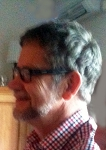

Företagsledare Curt Georg Järnfeldt
VD i flera gruvbolag, Civ.ingenjör vid KTH, Stockholm.
| Född: | 1945-01-24 Bureå, Skellefteå sn. [1] |
|---|
| Levde: | 1985 Linden 5, Sankt Olov fs, Skellefteå. [2] |
|---|
| Levde: | 1970 Engelbrekt fs, Stockholm. [1] | Gifta. |
|---|
| Levde: | 1980 Ankan 16, Gällivare, Gällivare kn. [3] | |
|---|
Noteringar
Curt Järnfeldt har tjänstgjort som bergsingenjör vid Laisvall bly-zink. underjordsgruva och Mine Intendent vid både Stekenjokk zink-koppar-underjordsgruva och Aitik koppar-guld dagbrott.
Järnfeldt har varit chef för Boliden Ltd, Canada från 1982-1985.
Tillbaka i Sverige arbetade han inom marknadsföring.
VD för Boliden Ore & Metals AB från 1987-1995.
Styrelsemedlem i koncernledningens i Boliden Mineral AB.
Chef för Euromines, Bryssel från 1995-1997, den branschorganisation för den europeiska gruvindustrin, som Järnfeldt etablerade.
Commercial Director för Norzink A / S i Odda, Norge åren 1998-2006,
varefter han återvände till Sverige för att arbeta som konsult.
För tjugo år har hans fokus legat på de kommersiella aspekterna av gruvdrift. Han fungerade som en direktör för IGE Nordic AB; varit chef för Nickel Mountain Resources AB. Vice VD på Nordic Iron Ore AB. Curt Järnfeldt har en Civ.ing,examen, som bergsingenjör från Kungliga Tekniska Högskolan (KTH) i Stockholm.
Curt Järnfeldt är sedan 1987 VD i Monomet Förvaltnings AB med säte i Stockholm.
Personhistoria
Källor
| [1] | Mtl Stockholms stad och län 1971 |
| |
| | |
| [2] | BOU 2/1986 |
| |
| | |
| [3] | Mtl Norrbottens län 1981 |
| |
| | |
| [4] | SPAR 90, RTB 85 |
| |
| | |
| [5] | RTB 92 / SPAR 92 / SPAR 92f / SPAR 95 |
| |
|
|  |
Curt Järnfeldt
Civ.ing.
Företagsledare
Fotot förmedlat av en systerson 2012-08-21.
|
| |
|
Curt Järnfeldt
Civ.ing.
Företagsledare
Fotot förmedlat av en systerson 2012-08-21.
|
|
{kind=link}
{kind=link}